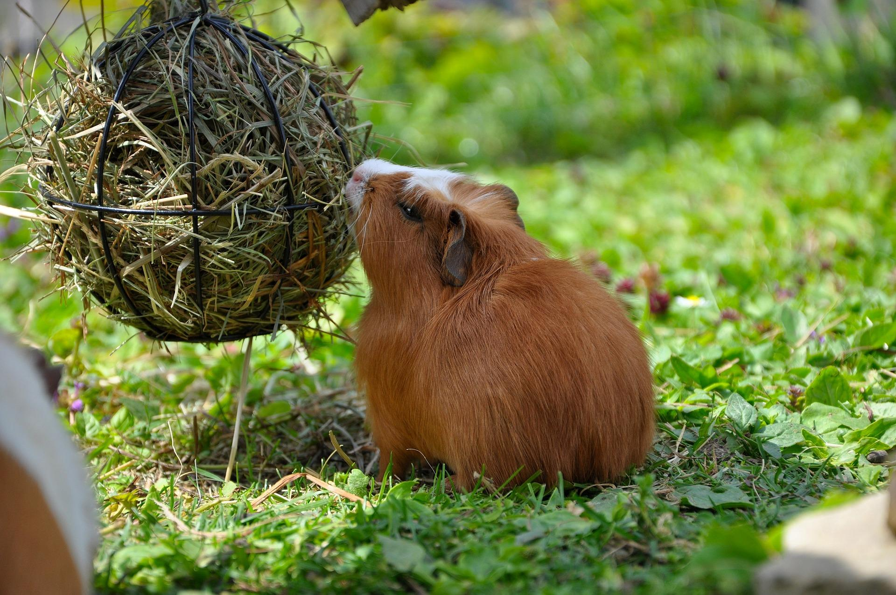
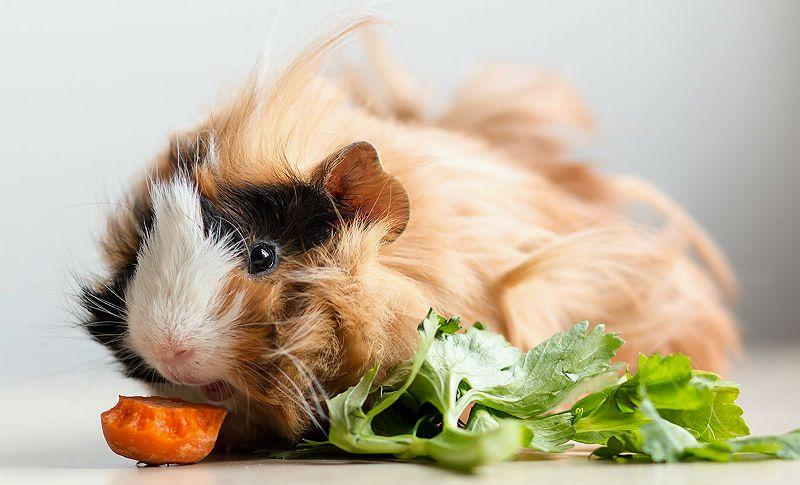
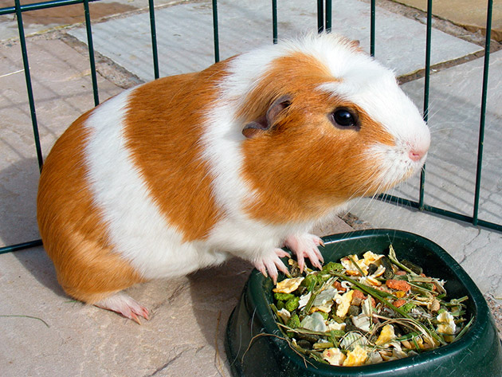

Морські свинки мають певні фізіологічні особливості. Через слабку моторику кишечника, тварини повинні часто їсти і не витримують навіть добу голодування. Тому господар такого вихованця повинен знати, як правильно організувати годування мурчаків і які продукти доведеться назавжди виключити з їхнього раціону.
Мурчаки рослиноїдні тварини, які їдять переважно сіно і овочі. У щоденному меню вихованців має бути:
10% сухого корму;
30% зелені і соковитих кормів;
60% сіна;
Слід максимально урізноманітнити раціон морських свинок. Однотипне харчування може призвести до виникнення дефіциту корисних вітамінів і мінералів. Також треба контролювати якість продуктів, які вживає тварина. Так як вона має слабку травну систему, її шлунок гостро реагує на хімію і неякісну їжу. Щоб уникнути проблем зі здоров’ям годувати морську свинку в домашніх умовах потрібно тільки екологічно чистими продуктами.
Тваринки часто залишають їжу і через якийсь час повертаються, щоб доїсти. Тому потрібно постійно перевіряти, щоб в мисках вихованців не залежувалася зіпсована їжа.
Годувати морську свинку потрібно 3 рази в день. На обід вона повинна з’їсти зелений корм, ввечері – сухий. Травна система звірка влаштована так, що в ній постійно повинна бути їжа. Голодування призводить до зупинки роботи шлунка. А якщо вихованець не їсть протягом 18-20 годин, він може загинути.

Як обрати і заготувати сіно
Через особливу будову шлунково-кишкового тракту, харчування морських свинок потрібно організувати так, щоб вони щодня могли їсти сіно. Це їхня улюблена їжа, яка стимулює роботу травної системи і перешкоджає появі захворювань кишечника. Його можна придбати в зоомагазині або заготовити самостійно. При виборі покупного сіна важливо звертати увагу на його аромат. Воно повинно пахнути травою, а не вогкістю. Потрібно уважно дивитися, щоб в сіні, яке їдять морські свинки, не траплялося великих, грубих гілочок, пилу та інших забруднень.
При бажанні звірків можна годувати власноруч заготовленим сіном. Сировина для нього рекомендується збирати подалі від боліт, автомагістралей і промислових підприємств. Сушити траву на зиму потрібно не менше 1,5-2 місяців, при цьому вона не повинна почорніти або заборонити. На замітку. Особливо корисно годувати гризуна сіном з бобово-злакових і бобових рослин. У ньому містяться всі необхідні для морської свинки вітаміни.
Зелені корми
Крім сіна тваринка любить їсти зелені корми. Зелений корм — це надземна частина кормових культур, які ростуть на поліпшених або природних луках, пасовищах і полях. Вони мінімізують ризик розвитку захворювань травної системи і насичують організм корисними речовинами.
Допускається така листова зелень, як крес-салат, качанний салат (без підстави і серцевини), пекінський салат (з видаленням нижньої частини, яка накопичує нітрати) і власне листовий салат (листи без черешків), але в невеликій кількості, так як деякі з них, зокрема крес-салат, мають сечогінний ефект і надають подразнюючу дію на дихальні шляхи.
Рекомендовані також:
кріп і петрушка;
зелень пророщених злаків (у тому числі вівса і пшениці);
селера;
листя садової та лісової суниці;
листя смородини, малини і м’яти;
подорожник, кульбаби, снить, конюшина і інша трава;
Не забувайте ретельно промивати все зірване!
Більшість дикорослих рослин отруйні і непридатні для годування мурчаків. Тому збирати їх потрібно вкрай обережно. З міркувань безпеки, не можна годувати морських свинок невідомими рослинами. З тієї ж причини тваринкам заборонено їсти зелень, яка придбана на ринку. Якщо вона піддавалася обробці інсектицидами, то може викликати сильне отруєння і навіть загибель вихованця.
Зернові корми
Свинки травоїдні, а не зерноїдні створення, ось чому гранульовані/зернові суміші не можуть бути основою їх раціону. Взагалі, зернові корми є досить шкідливими, так як тваринки, які їдять багато вуглеводів, страждають ожирінням і кишечник тварини не вміє розщеплювати крохмаль через відсутність необхідних ферментів.Тому крупи морським свинкам не можна давати, а гранули – в строго обмежених кількостях і тільки якщо мурчаки ведуть досить рухливий спосіб життя, а в ідеалі, перевести свого улюбленця тільки на натуральне харчування.
Важливо! При бажанні перевести свинку на натуральне харчування, робіть це плавно. Не можна різко прибирати гранульований корм з меню зростаючих, вагітних і лактуючих гризунів (це може підірвати їх здоров’я).

Соковиті рослинні продукти
Щоб в денному раціоні були представлені всі вітаміни, соковиті корми обов’язково чергують: ідеально – від 3 до 5 видів овочів/фруктів і зелені.
Овочевий асортимент:
морква, буряк (і їх бадилля);
кабачок і гарбуз (тільки декілька разів на тиждень);
капуста цвітна та білокачанна (в малих дозах);
перець болгарський;
бруква і ріпа;
зелений горошок (в стручках);
огірок і помідор (краще зі свого городу);
Важливо! Останні овочі дають рідко: огірки в великих кількостях «вимивають» кальцій, а покупні томати можуть бути перенасичені пестицидами.
Фруктово-ягідне асорті:
яблука, в тому числі сушені;
груші (дуже мало – вони важкі для шлунка);
цитрусові – рідко і потроху;
ягоди (будь-які, але нечасто);
В цей же список входять абрикоси, персики, нектарини, сливи і вишні, але з обмеженням по кількості: в цих плодах дуже багато цукрів, а в ринкових – ще і хімікатів.
На замітку. Всі фрукти, які їсть морська свинка, попередньо відокремлюють від кісточок і очищають від шкурок. Тільки баштанні культури дають тварині з шкіркою.

Горіхи і насіння
Для морської свинки це неприродні продукти в силу їх надмірної жирності: наприклад, в насінні соняшнику і арахісі міститься до 50% жиру. Налягаючи на горіхи, гризун набирає зайву вагу, погано себе почуває, тому що менше їсть сіна і травлення погіршується. Не дивно, що в 3-4-річному віці (при надмірному споживанні жирів), у морської свинки починається нестримна діарея. Якщо вже дуже хочеться нагодувати свого улюбленця насінням, обов’язково звільняйте їх від лушпиння і давайте не більше 1-4 насіння в тиждень.
Сушені фрукти
Сухофрукти переповнені природними цукрами, нешкідливими в малих дозах, але небезпечними – у великих. Якщо ви часто даєте мурчаку сушені фрукти, будьте готові до того, що він захворіє на діабет, стане страждати від зубного болю і висипань на шкірі.
Крім того, сухофрукти в непомірних кількостях порушують роботу кишечника і перешкоджають правильному сточуванню зубів. Розбухаючи, сухі фрукти дають відчуття насичення, при якому тварина менше цікавиться сіном, що відповідає як за діяльність шлунково-кишкового тракту, так і за сточування зубів.
Мурчак не може обійтись без деревини в раціоні, тому з задоволенням погризе пагони яблуні, сливи, ліщини, смородини, вишні, глоду, абрикоса, агрусу (без колючок), груші та чорниці.
Вітаміни та мінерали
Організм гризуна не здатний продукувати вітамін С, тому вам доведеться давати йому 5-25 мг аскорбінки, розчиняючи її в воді. Таку підгодівлю виключають, якщо в покупному кормі присутній багатий полівітамінний склад.
Морські свинки не можуть прожити без солі: 0,5 г на добу – для молодої тварини, і втричі більше – для дорослого. У ролі постачальників солей і кальцію виступають мінеральні камені, особливо затребувані взимку (при зниженні частки соковитої зелені, відповідальної за мікроелементи).
Недосвідчених господарів може налякати вид вихованця, який поїдає власний послід. Між тим, це абсолютно нормальне явище: так морські свинки проганяють по травному тракту вітаміни груп К і В (вони засвоюються лише при повторному попаданні в шлунок).
Вода
Відмовтеся від кип’яченої води на користь пропущеної через фільтр або негазованої (бутильованої). Одній свинці буде досить поїлки на 250 мл, яка завжди повинна бути наповнена. Воду потрібно міняти кожен день, разом з цим миючи поїлку.
Чим не можна годувати морських свинок
Список забороненпих продуктів:
картопля та крупи (в будь-якому вигляді);
молочні продукти, коров’яче масло, сир і вершки;
соління і копчені продукти;
зимові огірки, томати і кавуни;
кондитерські вироби, включно з шоколадом і зефіром;
м’ясо, риба і яйця;
лопух, шпинат і щавель;
зелена цибуля і салатна гірчиця;
гриби, каштани і будь-які суцвіття;
часник, хрін і редька;
кухонна сіль, цукор і солодкий чай;
хлібобулочні та макаронні вироби;
Морським свинкам не рекомендується давати гілки деяких дерев: крушини, дуба, горобини, модрини, граба, в’яза, верби, ялини і сосни.
Відео про харчування мурчаків, які можна подивитись